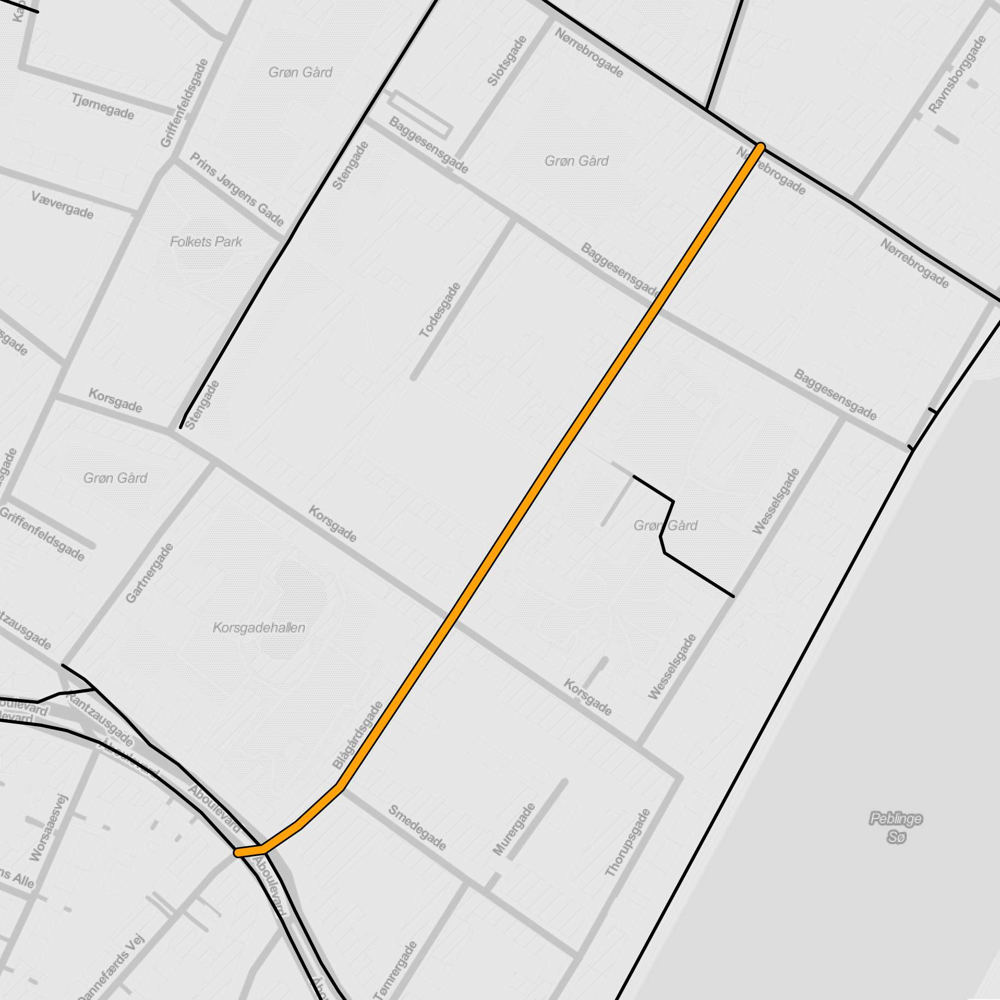
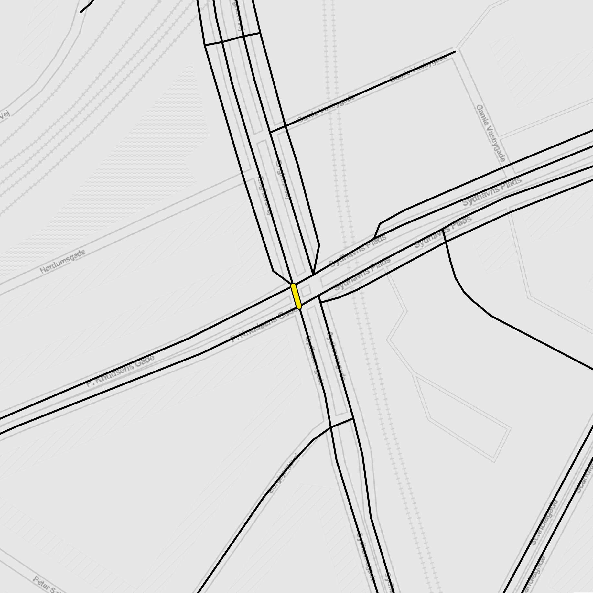
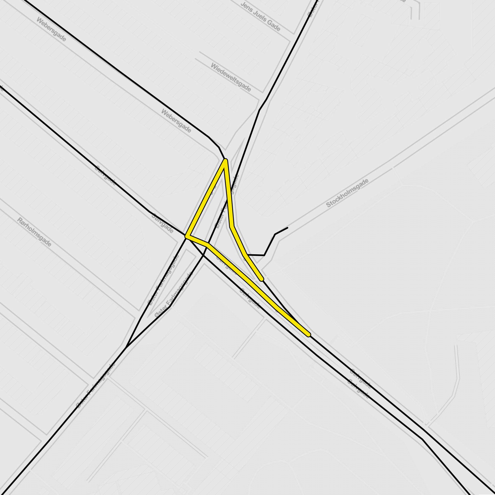
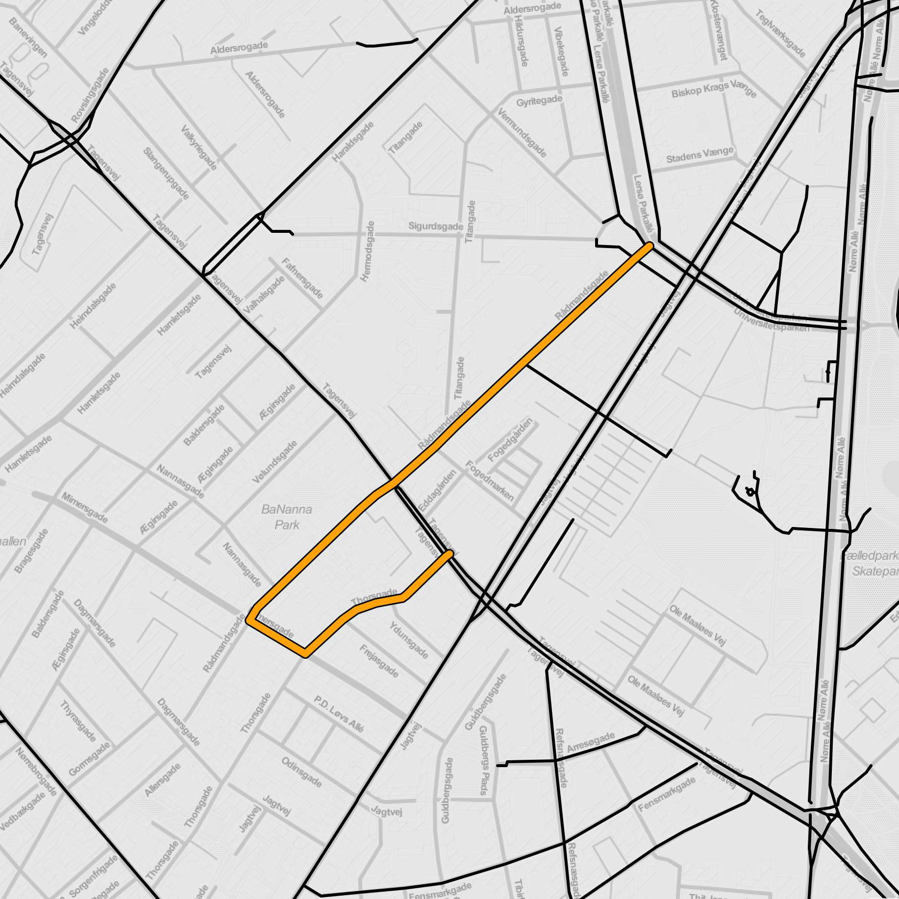

| Map |
Ranking |
Benefit |
Class |
Address |
|
1 |
65252.0 |
BR |
Knippelsbro |
|
2 |
39447.0 |
IS |
Øster Voldgade × Sølvgade |
|
3 |
37565.0 |
IS |
Enghavevej × Vigerslev Allé |
|
4 |
37308.0 |
ML |
Jacob Erlandsens Gade |
|
5 |
36498.0 |
ML |
Tåsingegade |
|
6 |
36278.0 |
RT |
Øster Allé → Nørre Allé |
|
7 |
34726.0 |
ML |
Hans Knudsens Plads, Glænøgade, Æbeløgade |
|
8 |
33653.0 |
BR |
Langebro |
|
9 |
32246.0 |
RT |
Backersvej → Øresundsvej |
|
10 |
31742.0 |
ML |
C. F. Richs Vej, Bernhard Bangs Allé |
|
11 |
29347.0 |
ML |
Griffenfeldsgade |
|
12 |
29145.0 |
ML |
Aldersrogade |
|
13 |
28745.0 |
ML |
Værnedamsvej |
|
14 |
28645.0 |
RT |
Hillerødgade → Borups Allé |
|
15 |
28568.0 |
ML |
Vermundsgade |
|
16 |
28342.0 |
ML |
Tschernings Allé |
 |
17 |
27495.0 |
ML |
Ålandsgade, Frankrigshusene |
|
18 |
27405.0 |
ML |
Blegdamsvej |
|
19 |
26933.0 |
RT |
Christians Brygge |
|
20 |
26311.0 |
IS |
Alekistevej × Jyllingevej |
 |
21 |
25607.0 |
ML |
Thorvaldsensvej |
|
22 |
25568.0 |
ML |
Sigynsgade |
|
23 |
25543.0 |
ML |
Hamletsgade |
|
24 |
25534.0 |
ML |
Kristen Bernikows Gade, Nikolaj Plads, Højbro Plads |
|
25 |
25067.0 |
ML |
Christian IX's Gade |
|
26 |
24565.0 |
ML |
Koldinggade, Randersgade |
|
27 |
24148.0 |
ML |
Langebrogade, Ved Langebro |
|
28 |
22942.0 |
ML |
Øster Farimagsgade |
|
29 |
22910.0 |
ML |
Borgmester Fischers Vej |
|
30 |
22770.0 |
ML |
Gåsebæksvej |
|
31 |
22769.0 |
RT |
Nørre Allé → Øster Allé |
|
32 |
22144.0 |
ML |
Nyborggade, Randersgade, Vordingborggade |
|
33 |
21856.0 |
ML |
Sofus Francks Vænge |
|
34 |
21688.0 |
ML |
Dybbølsgade |
|
35 |
21626.0 |
ML |
Tietgensgade, Helgolandsgade, Colbjørnsensgade |
|  |
36 |
21606.0 |
ML |
Blågårdsgade |
|
37 |
21599.0 |
IS |
Peter Bangs Vej × Lindevangs Allé |
|
38 |
20995.0 |
ML |
Annexstræde, Rughavevej |
|
39 |
20990.0 |
ML |
Herlufsholmvej |
|
40 |
20952.0 |
ML |
Nordre Frihavnsgade |
|
41 |
20518.0 |
RA |
Australiensvej/Bryggerivangen and Sankt Kjelds Plads |
|
42 |
20484.0 |
ML |
Christen Bergs Allé |
|
43 |
20464.0 |
ML |
Vendersgade |
|
44 |
20202.0 |
IS |
Skellet × Roskildevej |
|
45 |
20194.0 |
ML |
Forhåbningsholms Allé, Carl Plougs Vej, Julius Thomsens Plads, Julius Thomsens Gade |
|
46 |
20090.0 |
ML |
Valløvej |
|  |
47 |
19622.0 |
IS |
Enghavevej × P. Knudsens Gade |
|  |
48 |
19545.0 |
IS |
Sølvtorvet |
|
49 |
19503.0 |
IS |
Hammerichsgade × Vesterbrogade |
|
50 |
19171.0 |
ML |
Store Kongensgade |
|
51 |
19096.0 |
ML |
Birkedommervej, Landsdommervej |
|  |
52 |
18988.0 |
ML |
Rådmandsgade, Mimersgade, Thorsgade |
|
53 |
18965.0 |
ML |
Ørnevej, Mågevej |
|
54 |
18941.0 |
ML |
Gamle Vasbygade |
|
55 |
18812.0 |
IS |
Fensmarkgade × Tagensvej |
|
56 |
18531.0 |
ML |
Kronprinsesse Sofies Vej |
|
57 |
18331.0 |
ML |
Østbanegade, Bergensgade |
|
58 |
18254.0 |
ML |
Rantzausgade, Kapelvej, Hans Tavsens Gade |
|
59 |
18117.0 |
RT |
Søndre Fasanvej → Smallegade |
|
60 |
18116.0 |
ML |
Strandboulevarden |
|
61 |
17993.0 |
ML |
Valby Langgade, Gammel Jernbanevej |
|
62 |
17927.0 |
ML |
Oxford Allé |
|
63 |
17778.0 |
ML |
Frilands Allé |
|
64 |
17693.0 |
IS |
Ellebjergvej × Gammel Køge Landevej |
|
65 |
17597.0 |
IS |
H. C. Andersens Boulevard × Rysensteensgade |
|
66 |
17455.0 |
ML |
Bernstorffgade |
|
67 |
17392.0 |
IS |
Kingosgade × Frederiksberg Allé |
|
68 |
17362.0 |
ML |
Engvej, Sorrentovej, Backersvej |
 |
69 |
17319.0 |
ML |
Nørregade, Gammeltorv, Nytorv, Rådhusstræde, Frederiksholms Kanal |
 |
70 |
17290.0 |
ML |
Kronprinsessegade |
|
71 |
17290.0 |
ML |
Gustav Johannsens Vej |
|
72 |
17181.0 |
ML |
Ib Schønbergs Allé |
|
73 |
17071.0 |
ML |
Lygten |
|
74 |
16907.0 |
ML |
Mågevej |
|
75 |
16897.0 |
ML |
Retortvej |
 |
76 |
16869.0 |
IS |
Blegdamsvej × Tagensvej |
 |
77 |
16855.0 |
ML |
Guldbergsgade |
|
78 |
16766.0 |
IS |
Gammel Kongevej × Henrik Steffens Vej |
|
79 |
16762.0 |
ML |
Solvej |
|
80 |
16758.0 |
ML |
Frederiksberg Allé, Platanvej, Vesterfælledvej |
|
81 |
16730.0 |
ML |
Sibeliusgade |
|
82 |
16533.0 |
ML |
Vester Farimagsgade (north) |
|
83 |
16530.0 |
ML |
Stadfeldtsvej, Ole Borchs Vej, Høffdingsvej |
|
84 |
16530.0 |
ML |
Drosselvej |
|
85 |
16506.0 |
ML |
Korsager Allé |
|
86 |
16420.0 |
ML |
Kortløb |
|
87 |
16389.0 |
RT |
Ågade → Borups Plads |
|
88 |
16331.0 |
ML |
Tranehavevej |
|
89 |
15846.0 |
IS |
Toftegårds Plads × Vigerslev Allé |
|
90 |
15804.0 |
ML |
Stefansgade, Gormsgade, Mimersgade, Baldersgade |
|
91 |
15770.0 |
ML |
Sigurdsgade |
|
92 |
15717.0 |
BR |
Langebro (other side) |
|
93 |
15652.0 |
ML |
Jernbanegade |
|
94 |
15650.0 |
ML |
Shetlandsgade |
|
95 |
15597.0 |
IS |
Børsgade × Holmens Bro |
|
96 |
15585.0 |
ML |
Vester Farimagsgade (south) |
|
97 |
15557.0 |
ML |
Rialtovej |
|
98 |
15528.0 |
ML |
Peder Lykkes Vej, Prinsesse Christines Vej, Højdevej |
|
99 |
15497.0 |
ML |
Lergravsvej |
|
100 |
15440.0 |
ML |
Bagerstræde |
|
101 |
15435.0 |
ML |
Æblevej |
|
102 |
15376.0 |
ML |
Strømmen |
|
103 |
15365.0 |
ML |
Straussvej |
|
104 |
15365.0 |
IS |
Mellemvangen × Hareskovvej |
|
105 |
15323.0 |
ML |
Lyshøjgårdsvej |